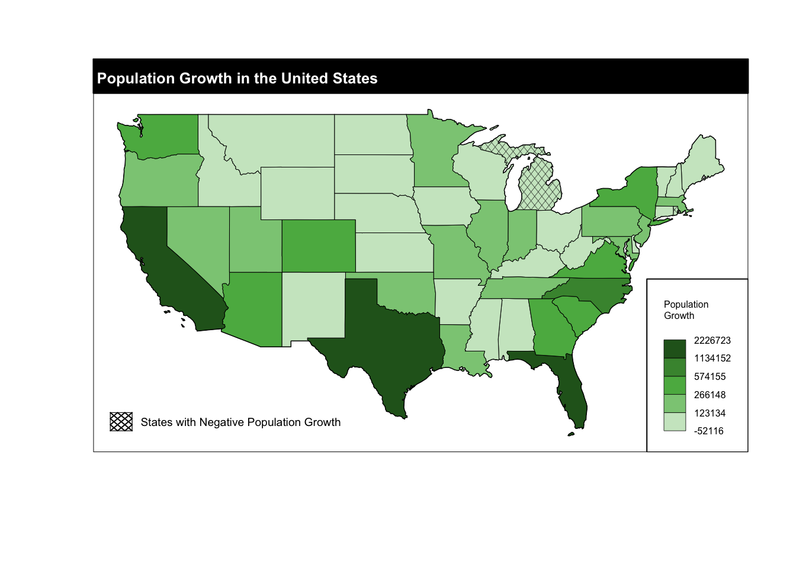

# spData makes the us_states data frame available.
library(spData)
# sf is needed to read the geometry in the us_states data frame which is an sf object.
library(sf)
# cartography allows you to add the hatched and choropleth map layers.
library(cartography)
# adds functionality the helps us rearrange the data and is generally wonderful.
library(tidyverse)Cartography Example
MEDS
data visualization
A brief example showing how to use cartography to add a hatched layer to a map.

Introduction
The cartography package can be used with base r plot to add map elements and improve the legibility of your maps. Hatching can be an effective way to visualize a map feature but can be a little complicated to add. In this example we will use US States data from the spData package and the cartography package to show how you can add hatching to a map.
Lets visualize population growth in the United States between 2010 and 2015 with a hatched feature showing states that experienced negative growth.
# Use mutate from the tidyverse to create a new variable for population growth called pop_growth.
us_states_diff <- us_states |>
mutate("pop_growth" = total_pop_15 - total_pop_10)In order to add the hatched layer we will need a data frame with only the polygons that will be hatched. We can use the tidyverse to accomplish this.
# Creates a data frame with only polygons of states that had negative population growth.
hatched_df <- us_states_diff |>
select(pop_growth) |>
filter(pop_growth < 0)The cartography package creates layers that can be plotted using plot from base r. This requires that we create a base plot and add all of the layers we want in one code chunk. Here is a quick preview of what we will do below: - Create a base plot. - Create and add a choropleth layer of population growth. - Create and add a hatched layer of showing states with negative population growth. - Add a legend - Set layout options.
# Creates the base plot that all the following layers will be plotted on top of.
plot(us_states$geometry)
###############################
####Choropleth Layers##########
###############################
# Creates and add the choropleth layer to the base plot
choroLayer(
# specify the data.
x = us_states_diff,
# specify the variable to be plotted.
var = "pop_growth",
# specify the method of creating breaks.
method = "jenks",
# specify the number of classes.
nclass = 5,
# sepecify the color palette, these need to be in the order you want them to appear.
col = c("#cce7c9","#8bca84","#5bb450","#46923c","#276221"),
# specify border color.
border = "black",
# specify line weight.
lwd = 0.5,
# sets legend position.
legend.pos = "bottomright",
# sets legend title size.
legend.title.cex = 0.5,
# sets legend values size.
legend.values.cex = 0.5,
# sets legend title.
legend.title.txt = "Population \nGrowth",
# adds a frame to the legend.
legend.frame = TRUE,
# adds this layer to the previous plot.
add = TRUE)
# This layer is purely aesthetic and makes it so that the map of United States apears on top of the legend created in the previous layer.
choroLayer(
x = us_states_diff,
var = "pop_growth",
method = "jenks",
nclass = 5,
col = c("#cce7c9","#8bca84","#5bb450","#46923c","#276221"),
border = "black",
lwd = 0.5,
legend.pos = "n",
add = TRUE)
###############################
###HATCHED LAYER###############
###############################
# Creates the hatched layer and adds it to the plot.
hatchedLayer(
# the data to be plotted, this is the data frame we created earlier of only the states to the hatched.
x = hatched_df,
# sets the pattern
pattern = "diamond",
# sets the densiry of the pattern,.
density = 4,
# sets the line weight.
lwd = 0.3,
# adds the layer to the previous plot.
add = TRUE)
#########################################
######Hatched Legend#####################
#########################################
# Creates a legend for the hatched layer. This will not be part of the choropleth legend.
legendHatched(pos = "bottomleft",
title.txt = "",
categ = "States with Negative Population Growth",
patterns = "diamond",
density = 1,
col = "black",
ptrn.bg = "white")
###############################
#######Layout options##########
###############################
# Creates a layout layer for displaying the map.
layoutLayer(title = "Population Growth in the United States",
frame = TRUE,
scale = FALSE
)
Citation
BibTeX citation:
@online{french2022,
author = {Jessica French},
title = {Cartography {Example}},
date = {2022-12-20},
url = {https://jessicafrench.github.io/code_examples/2022-12-20-cartography-example},
langid = {en}
}
For attribution, please cite this work as:
Jessica French. 2022. “Cartography Example.” December 20,
2022. https://jessicafrench.github.io/code_examples/2022-12-20-cartography-example.